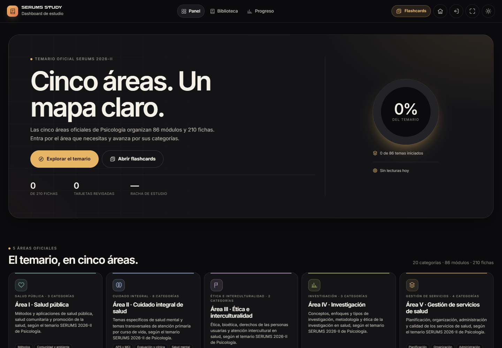
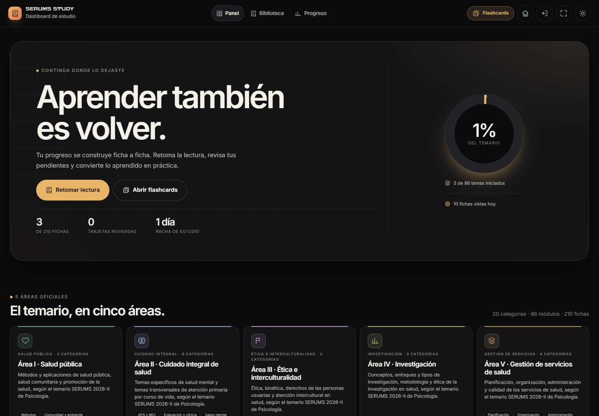
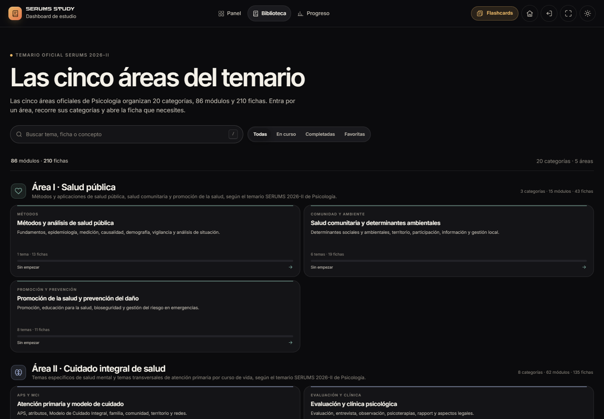
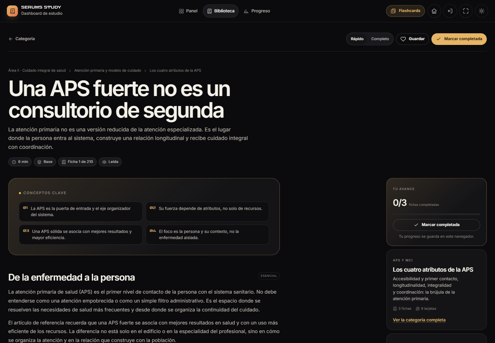
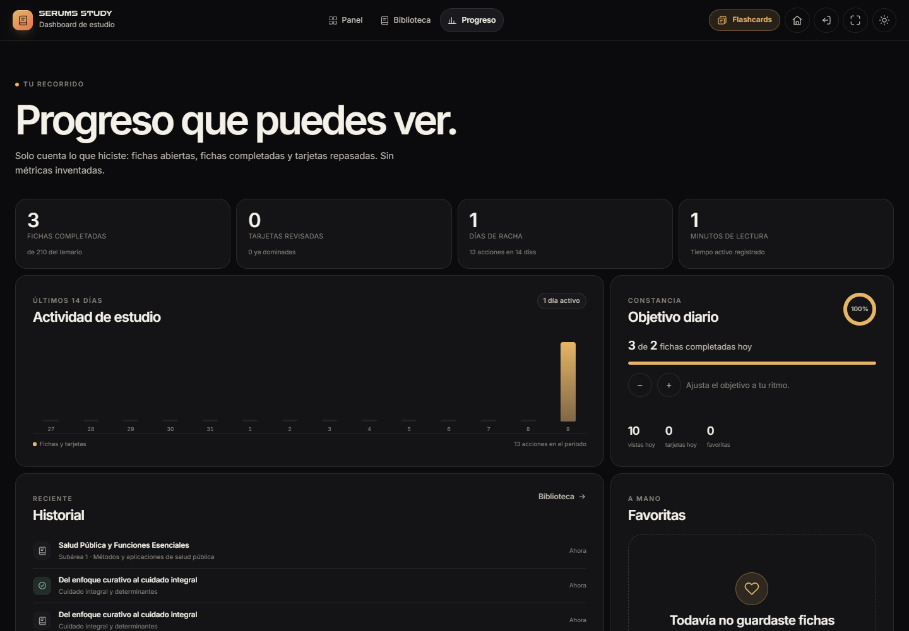
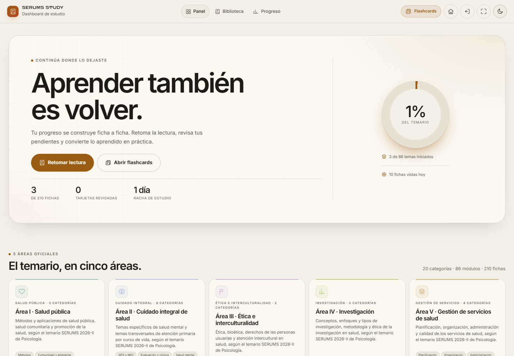
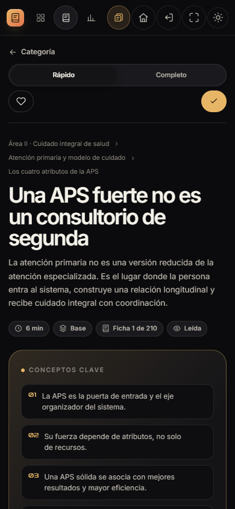

Qué es, cómo funciona, qué contiene, cómo se comporta en el navegador y qué conviene corregir antes de usarlo a diario.
Combina una lectura completa del código con una auditoría real en navegador. Las secciones 1 a 4 explican qué es la app y cómo se usa; las secciones 5 a 10 analizan contenido, arquitectura, diseño, accesibilidad, rendimiento y pruebas; las secciones 11 a 15 priorizan hallazgos, recomendaciones, despliegue y mantenimiento. Las evidencias completas están en la carpeta informe/.
Study Dashboard es una aplicación web estática para organizar, leer y medir el avance del temario de Psicología del SERUMS 2026-II. No es una app de flashcards ni un banco de preguntas: es la capa de lectura y progreso del ecosistema SERUMS STUDY, y se conecta con Study Flashcards para convertir lo leído en recuperación activa.
La aplicación está construida con JavaScript clásico, sin framework, sin build y sin servidor. Todo el contenido vive en un único archivo de datos de 2,59 MB (study-data/temario.js), y el progreso se guarda en el navegador con IndexedDB y localStorage. Esa decisión la hace muy fácil de ejecutar y de auditar, pero también concentra en el navegador todos los riesgos de pérdida de datos.
Lo mejor:
lang, enlace de salto, un h1 por vista, aria-current, aria-pressed, aria-live, foco gestionado, prefers-reduced-motion y atajo /.Lo que hay que corregir antes de distribuirlo a estudiantes:
display:none, «Guardar» y «Marcar completada» quedan como iconos sin aria-label. axe lo marca como crítico.Veredicto: producto sólido y muy bien pensado para uso personal; con las correcciones de accesibilidad y una exportación de progreso quedaría listo para un uso real continuado. No es una plataforma multiusuario ni una app con sincronización entre dispositivos, y no pretende serlo.
| Dimensión | Valoración | Motivo |
|---|---|---|
| Propósito y enfoque | Excelente | Resuelve una necesidad concreta y no intenta ser todo a la vez. |
| Contenido y cobertura | Excelente | 210 fichas, 630 tarjetas y 48 fuentes; estructura verificable. |
| Experiencia de lectura | Muy buena | Lector claro, modos, fuentes y restauración de posición. |
| Navegación | Buena | Rutas profundas y búsqueda; pierde scroll al volver a la biblioteca. |
| Diseño visual | Excelente en oscuro / buena en claro | Identidad fuerte; contraste mejorable en tema claro. |
| Accesibilidad | Buena con fallos corregibles | Base sólida; 3 tipos de fallo en lector móvil y contraste claro. |
| Rendimiento | Mejorable | 2,47 MiB de contenido en cada carga fría. |
| Persistencia | Buena, pero sin red de seguridad | IndexedDB + localStorage + merge; falta exportar/importar. |
| Integración | Excelente | HUB y Flashcards comparten estado y enlaces profundos. |
| Documentación y versionado | Mejorable | Registro 2.2.0 frente a assets 2.2.1/2.2.2; falta meta author. |
| Campo | Valor |
|---|---|
| Nombre | Study Dashboard |
| Marca | SERUMS STUDY · ZARCONT |
| Tipo | Aplicación web estática de una sola página (SPA por hash) |
| Propósito | Organizar el temario, leer fichas resumidas y seguir el progreso real |
| Público | Postulantes de Psicología al SERUMS 2026-II; estudio individual |
| Idioma | Español (Perú); fechas con es-PE |
| Stack | HTML5, CSS3 y JavaScript ES5/ES2017, sin framework ni dependencias npm |
| Build | No requiere compilación |
| Backend | Ninguno |
| Persistencia | IndexedDB study-serums + localStorage study-state-v1 |
| Datos | study-data/temario.js (2.587.623 bytes) |
| Autoría | ZARCONT; licencia propietaria © 2026 |
| Versión de contenido | 2.5.0 |
| Versión de assets | app.js?v=2.2.1, styles.css?v=2.2.2 |
| Versión registrada | AUTORIA.md: Study Dashboard 2.2.0 |
| Tema | Oscuro por defecto; claro persistente |
| Responsive | Sí; breakpoints 1150, 940, 760, 620 y 380 px |
| Accesibilidad | Base WCAG orientada a AA; incumplimientos puntuales medidos |
| Navegadores objetivo | Chrome, Edge, Firefox y Safari modernos; probado en Chrome |
| Arranque | Servir la carpeta raíz ZARCONT SERUMS por HTTP |
| Archivo | Tamaño | Líneas | Responsabilidad |
|---|---|---|---|
index.html |
4.618 B | 105 | Estructura, appbar, montaje de iconos y scripts |
app.js |
67.742 B | 1.330 | Router, vistas, eventos, lector y progreso |
styles.css |
38.510 B | 504 | Panel, biblioteca, lector, progreso y responsive |
study-data/temario.js |
2.587.623 B | — | Fuentes, áreas, temas, fichas, tarjetas y metadatos |
study-shared/store.js |
34.865 B | 959 | Estado, persistencia, estadísticas y recomendaciones |
study-shared/taxonomy.js |
17.359 B | 437 | 5 áreas primarias, 20 categorías y mapas derivados |
study-shared/base.css |
16.882 B | 361 | Tokens, componentes y responsive compartido |
study-shared/ui.js |
6.920 B | — | Utilidades de interfaz, formato, toasts y tema |
study-shared/icons.js |
5.369 B | — | Iconos SVG en línea |
serums-chrome.js |
12.494 B | — | Controles Inicio, HUB y pantalla completa |
serums-chrome.css |
3.209 B | — | Estilos de esos controles |
serums-mobile.css |
10.943 B | — | Safe areas y ajustes móviles del ecosistema |
Además, la aplicación referencia 48 PDFs en study-data/fuentes/ que suman 218.480.775 bytes (≈208 MiB). No se cargan al abrir la app; solo cuando el usuario abre una fuente.
Study Dashboard es una de las cinco aplicaciones del lanzador SERUMS HUB. La separación es deliberada: cada app resuelve una parte del ciclo de estudio.
| Aplicación | Función | Relación con Study Dashboard |
|---|---|---|
| SERUMS HUB | Lanzador y tarjeta de progreso | Lee studyhub:snapshot:v1 y muestra avance y último punto |
| BANQUEO · Examen Studio | Banco de preguntas y práctica de examen | Independiente; no comparte el temario de Study |
| PLAZAS SERUMS | Explorador de plazas y adjudicación | Independiente |
| Study Dashboard | Temario, fichas, lector y progreso de lectura | App de este informe |
| Study Flashcards | Recuperación activa con 630 tarjetas | Comparte StudyStore, progreso y enlaces profundos |
| SERUMS QUEST | Capa RPG educativa | Reutiliza banco y temario por referencia |
Es:
No es:
El panel es la portada y el centro de decisión diaria. Se compone de:

En la primera visita solo hay una recomendación, así que la rejilla de tres columnas deja dos espacios vacíos. Es el primer detalle visual a pulir.
Con actividad, el panel cambia de narrativa y prioriza «Retomar lectura», el último punto de trabajo y las recomendaciones pendientes.

La biblioteca es la vista más profunda. Tiene tres niveles:
Herramientas:
/ para enfocar el campo.completadas/total.
La búsqueda no recorre el cuerpo de las fichas: solo título, resumen, conceptos clave, kicker, área y categoría. Para 195.847 palabras de contenido, esa es una limitación importante si el usuario recuerda una frase que solo aparece en un párrafo.
El lector es la pieza más trabajada. Cada ficha muestra:
core) y modo completo (todas). La preferencia se guarda en study-dashboard-mode.target="_blank" y rel="noopener".
La lectura se registra en bloques: flushReading cada 30 segundos, al cambiar de ruta, al ocultar la pestaña y al cerrar. Solo cuenta bloques de al menos 3 segundos.
La vista de progreso resume lo que el usuario hizo, sin métricas decorativas:

El flujo de ida y vuelta está bien resuelto:
study-flashcards/index.html?deck=<sheet>&mode=free&sheet=<sheet>&from=dashboard.sessionStorage y ofrece «Consultar ficha resumen».?sheet=<id>&from=flashcards&deck=<id>, la app limpia la query, la convierte en #/ficha/<id>, muestra el chip «Desde flashcards» y cambia el botón de volver a «Volver a flashcards».Ese contrato está bien pensado y se verificó en ejecución: la query se limpia, el hash queda canónico y el botón de vuelta apunta al mazo correcto.
El temario se organiza en cinco áreas oficiales de Psicología, veinte categorías y ochenta y seis módulos. La jerarquía real es:
fuente (48)
└── tema / módulo (86: 85 temas + 1 contenedor)
└── ficha (210)
├── sección (1.392)
├── concepto clave (1.231)
└── tarjeta (630: 210 concepto + 210 múltiple + 210 aplicación)
Cada ficha pertenece a un tema; cada tema, a una categoría; cada categoría, a una de las cinco áreas primarias. Las 18 áreas heredadas del contenido original se usan como alias y se remapean a las cinco áreas oficiales; la interfaz solo muestra cinco.
| Área | Categorías | Módulos (UI) | Fichas | % del total |
|---|---|---|---|---|
| I · Salud pública | 3 | 15 | 43 | 20,5 % |
| II · Cuidado integral de salud | 8 | 62 | 135 | 64,3 % |
| III · Ética e interculturalidad | 2 | 2 | 9 | 4,3 % |
| IV · Investigación | 3 | 3 | 7 | 3,3 % |
| V · Gestión de servicios de salud | 4 | 4 | 16 | 7,6 % |
| Total | 20 | 86 | 210 | 100 % |
Matiz de conteo: los 86 «módulos» de la interfaz incluyen un tema contenedor (
topic-psi-ci-2) con 22 fichas oficiales. Si se cuentan solo temas con contenido propio, son 85 temas; el contenedor aporta las 22 fichas que la biblioteca muestra como «Fichas oficiales del temario». El Área II muestra 62 módulos porque suma sus 61 temas + el contenedor.
La distribución es desigual: el Área II concentra casi dos tercios de las fichas. Es coherente con el peso de cuidado integral, salud mental y curso de vida en el temario, pero conviene tenerlo presente al planificar: no es un temario de cinco bloques equivalentes.
| Área | Categoría | Temas | Fichas |
|---|---|---|---|
| I | Métodos y análisis de salud pública | 1 | 13 |
| I | Salud comunitaria y determinantes ambientales | 6 | 19 |
| I | Promoción de la salud y prevención del daño | 8 | 11 |
| II | Atención primaria y modelo de cuidado | 7 | 14 |
| II | Evaluación y clínica psicológica | 1 | 8 |
| II | Salud mental, consumo y violencias | 16 | 32 |
| II | Gestación, infancia y adolescencia | 13 | 26 |
| II | Adultez, vejez, crónicas y nutrición | 12 | 26 |
| II | Prevención y detección temprana | 0 | 4 |
| II | ITS, VIH, hepatitis y transmisión vertical | 8 | 16 |
| II | Seguridad del paciente e IAAS | 4 | 9 |
| III | Ética y bioética | 1 | 3 |
| III | Atención intercultural en salud | 1 | 6 |
| IV | Conceptos y clasificación | 1 | 3 |
| IV | Metodología | 1 | 2 |
| IV | Ejecución y comunicación | 1 | 2 |
| V | Planificación y presupuesto | 1 | 3 |
| V | Organización de los servicios | 1 | 7 |
| V | Administración de los servicios | 1 | 4 |
| V | Sistema de gestión de la calidad | 1 | 2 |
«Prevención y detección temprana» no tiene temas propios: sus 4 fichas son oficiales y se muestran como grupo aparte. Es una consecuencia del diseño del temario, no un error de datos; la interfaz lo resuelve bien.
| Métrica | Valor |
|---|---|
| Fuentes declaradas | 48 |
| Referencias de fuente en fichas | 254 |
| Temas / módulos | 86 (85 + 1 contenedor) |
| Fichas | 210 |
| Tarjetas | 630 |
| Secciones | 1.392 |
Secciones esenciales (core) |
879 |
Secciones de ampliación (full) |
513 |
| Conceptos clave | 1.231 |
| Palabras (título, resumen, conceptos, secciones, tablas y avisos) | 195.847 |
| Minutos declarados de lectura | 2.524 (≈ 42 h 4 min) |
| Media por ficha | 933 palabras · 12 min · 6,6 secciones · 5,9 conceptos |
| Ficha más corta / más larga | 223 / 4.492 palabras; 5 / 22 min |
| Niveles | 80 Base · 92 Intermedio · 38 Avanzado |
| Fichas con tablas | 189 (90 %) |
| Fichas con avisos | 210 (100 %) |
Fichas con aviso de advertencia (warn) |
72 (34 %) |
| Fichas solo con secciones esenciales | 22 (10,5 %) |
A 30 minutos diarios, el temario completo son unas 12 semanas de lectura; a 60 minutos, unas 6 semanas. Son cifras útiles para planificar, pero no incluyen el tiempo de repaso con flashcards.
Las 48 fuentes son, en su mayoría, documentos técnicos y normativos del MINSA, guías de práctica clínica, normas técnicas, leyes y un artículo académico. También hay cinco documentos de síntesis del temario de Psicología.
| Tipo | Cantidad |
|---|---|
| Normas técnicas | 14 |
| Guías de práctica clínica y guías técnicas | 13 |
| Documentos técnicos | 6 |
| Material de estudio / síntesis | 5 |
| Manuales | 2 |
| Leyes y reglamentos | 3 |
| Artículo, declaración, política, directiva y temario | 5 |
| Total | 48 |
Dos fuentes no están referenciadas por ninguna ficha:
src-psico-temario: el PDF del temario oficial de Psicología 2026-II. Se usa para estructurar el contenido, pero ninguna ficha lo cita.src-nutricion-ninos-anterior: una versión anterior de la guía de nutrición infantil.Las cinco síntesis de Psicología sí se citan: salud pública (31 fichas), cuidado integral (30), gestión (16), ética (9) e investigación (7).
La comprobación programática no encontró errores estructurales:
La calidad estructural es alta. La calidad editorial es más desigual: hay fichas de 2 secciones y 223 palabras junto a fichas de 19 secciones y 4.492 palabras. No es un defecto grave —el temario tiene temas de distinta densidad—, pero el usuario percibe saltos de esfuerzo entre fichas.
study-data/temario.js
└── window.STUDY_CONTENT
│
├── study-shared/taxonomy.js → áreas, categorías, mapas, alias
├── study-shared/store.js → estado, estadísticas, persistencia
├── study-shared/ui.js → escapeHTML, iconos, toasts, tema
├── study-shared/icons.js → SVG inline
└── study-dashboard/app.js → router + vistas + eventos
│
├── localStorage study-state-v1
├── IndexedDB study-serums / state / main
└── localStorage studyhub:snapshot:v1 → HUB
Study Flashcards lee y escribe el mismo StudyStore; el HUB solo lee el snapshot. serums-chrome.js monta los controles de Inicio, HUB y pantalla completa en la appbar existente.
innerHTML.document para clics, input y teclado; un listener de hashchange para rutas.state de app.js; estado persistente en StudyStore.| Ruta | Vista | Notas |
|---|---|---|
#/ |
Panel | Portada; estado inicial o con actividad |
#/biblioteca |
Biblioteca completa | Cinco áreas y veinte categorías |
#/biblioteca/:area |
Área | Categorías y progreso del área |
#/biblioteca/:area/:categoria |
Categoría | Módulos plegables y fichas oficiales |
#/ficha/:sheetId |
Lector | Ficha concreta; restaura posición |
#/progreso |
Progreso | KPIs, actividad, historial, favoritas |
| Otra ruta | 404 | Estado vacío con alternativas |
Parámetros de entrada:
?sheet=<id>: abre una ficha concreta y limpia la query.?from=flashcards: marca el origen y cambia el botón de vuelta.?deck=<id>: mazo de Flashcards al que volver.La app canonicaliza áreas heredadas y categorías mal combinadas con history.replaceState; si el enlace mezcla un área y una categoría que no le corresponden, muestra un 404 explicativo.
| Clave | Almacén | Función |
|---|---|---|
study-state-v1 |
localStorage | Estado completo, respaldo y merge entre pestañas |
study-serums / state / main |
IndexedDB | Estado primario |
studyhub:snapshot:v1 |
localStorage | Snapshot ligero para el HUB |
study-theme |
localStorage | Tema oscuro/claro |
study-dashboard-mode |
localStorage | Modo rápido/completo |
El estado guarda:
sheets: por ficha, vistas, primera vista, última apertura, completada, favorita, scroll y segundos de lectura.cards: por tarjeta, caja, vencimiento, último repaso, resultado, aciertos, fallos y lapsos.sessions: hasta 100 sesiones de Flashcards.activity: por día, vistas, completadas, repasos, aciertos, fallos y segundos.goals.dailySheets, history (máximo 60), last.dashboard, last.flashcards y flashSession.El guardado es defensivo:
pickNewer elige el estado con updatedAt más reciente entre IndexedDB y localStorage.mergeStates combina fichas, tarjetas, sesiones, actividad, historial, objetivos y último punto.Math.max para no duplicar entre pestañas.storage sincroniza entre pestañas; visibilitychange y pageshow recuperan estados de bfcache.Lo que falta: exportar/importar el estado, borrar el progreso desde la interfaz y una política de poda de datos obsoletos. El estado no se sincroniza entre dispositivos.
| Situación | Comportamiento |
|---|---|
| Falta el contenido | Estado de error con reintento e ir al HUB |
| Faltan módulos compartidos | Estado de error (con una dependencia frágil: el propio error usa StudyUI) |
| Falla IndexedDB | Respaldo en localStorage; la app sigue leyendo |
| Falla el almacenamiento por completo | Aviso, pero el render posterior puede reemplazarlo (ver hallazgos) |
| Temario vacío | Estado vacío con enlaces a Flashcards y HUB |
| Ficha inexistente | 404 con tres fichas alternativas |
| Área/categoría inválida | 404 explicativo |
Enlace antiguo ?sheet |
Redirección al panel con aviso |
Falta StudyTaxonomy |
Degradación silenciosa a 23 áreas heredadas, sin categorías (no se comprueba) |
UI.escapeHTML en títulos, resúmenes, secciones, tablas, avisos, fuentes y búsqueda.target="_blank" y rel="noopener".eval en el código de la app; el archivo de datos es un script local de confianza.index.html con file:// puede aislar el almacenamiento.#0B0B0D, superficie #141417, texto #F4F1E9.#E6B566 en oscuro y #9A5B12 en claro.#F3F0E8, superficie #FBF8F1, texto #1D1B17.#DF2531; verde de éxito #8FD3B0; rojo de peligro #F07A7A.
Se probaron seis viewports: 360×640, 390×844, 768×1024, 1024×768, 1440×900 y 844×390.
scrollWidth === innerWidth.aria-label.--sat, --sab, --sal, --sar) están contempladas.
Observación de diseño móvil: la appbar concentra nueve controles (marca, tres destinos, Flashcards, Inicio, HUB, pantalla completa y tema). Cabe, pero es densa y algunos objetivos son de 35 px. En un dispositivo real, conviene probar si la tasa de error al tocar es aceptable.
dash-in de 320 ms; duración y curvas en tokens (140 ms, 220 ms, 420 ms).prefers-reduced-motion: reduce desactiva animaciones, transiciones y scroll suave.meta[name="theme-color"] se actualiza al cambiar de tema.lang="es", un h1 por vista, landmarks (header, main, footer, nav), enlace «Saltar al contenido» y main enfocable.aria-current="page" en la navegación; aria-pressed en filtros, modos y acciones de estado.aria-live para anuncios y toasts; foco al h1 en cambios de ruta con preventScroll.<details>/<summary> nativos para los módulos; el estado abierto se conserva en la sesión./ para buscar; foco visible con :focus-visible.prefers-reduced-motion, color-scheme, interactive-widget=resizes-content y safe areas.title; PDFs en pestaña nueva con noopener.| Página / estado | Regla | Impacto | Nodos | Detalle |
|---|---|---|---|---|
| Panel, Biblioteca, Lector, Progreso (oscuro, escritorio) | label-content-name-mismatch |
Serio | 1 | .s-brand: el aria-label «Study Dashboard, inicio» no contiene el texto visible «SERUMS STUDY Dashboard de estudio» |
| Lector móvil (claro) | button-name |
Crítico | 2 | Botones «Guardar» y «Marcar completada» sin nombre accesible al ocultar su texto en móvil |
| Lector móvil (claro) | color-contrast |
Serio | 7 | Chip «Completada», números de concepto y badges «Ampliación»/fuente |
| Lector móvil (claro) | scrollable-region-focusable |
Serio | 1 | .reader-table-wrap se desplaza horizontalmente pero no es enfocable por teclado |
No se detectaron violaciones en las vistas de escritorio en tema oscuro salvo la marca. Eso indica una base sólida, no una accesibilidad completa: axe no evalúa la experiencia real con lector de pantalla.
Medición con composición de fondos translúcidos y luminancia relativa:
| Elemento | Tema | Color / fondo efectivo | Ratio | Mínimo | Resultado |
|---|---|---|---|---|---|
| Chip «Completada» | Claro | #8FD3B0 sobre #E7EDE1 |
1,45:1 | 4,5:1 | Falla |
| Icono de advertencia | Claro | #F07A7A sobre #F3E3DC |
2,16:1 | 3,0:1 (gráfico) | Falla |
| Badge «Ampliación» / fuente | Claro | #9A5B12 sobre #E9E0D0 |
4,13:1 | 4,5:1 | Falla por poco |
| Número de concepto | Claro | #9A5B12 sobre #ECE8DE |
4,42:1 | 4,5:1 | Falla por poco |
| Texto atenuado | Claro | #6E675C sobre #FBF8F1 |
5,27:1 | 4,5:1 | Pasa |
| Texto principal | Claro | #1D1B17 sobre #F3F0E8 |
15,1:1 | 4,5:1 | Pasa |
| Chip «Completada» | Oscuro | #8FD3B0 sobre #1B2321 |
9,26:1 | 4,5:1 | Pasa |
| Icono de advertencia | Oscuro | #F07A7A sobre #241719 |
6,40:1 | 3,0:1 | Pasa |
La causa es clara: --green, --green-soft, --danger y --danger-soft se definen en :root para el tema oscuro, pero el bloque html[data-theme="light"] no los redefine. El «verde menta» y el «rojo claro» están pensados para fondo negro.
--green, --green-soft, --danger y --danger-soft con variantes oscuras que alcancen 4,5:1 (texto) y 3:1 (iconos). Verificar con un script de contraste, no a ojo.aria-label dinámico a los botones de favorito y completar, o mantener un texto visualmente oculto en lugar de display:none. Actualizarlo al cambiar de estado («Guardar ficha» / «Quitar de favoritas», «Marcar como completada» / «Marcar como pendiente»).tabindex="0", role="region" y aria-label al contenedor de tablas desplazables; comprobar que se puede recorrer con teclado.aria-label a algo que incluya el texto visible, por ejemplo «SERUMS STUDY, Study Dashboard, inicio», o retirar el aria-label y añadir un texto solo para lectores.01, 02… como aria-hidden="true" si no aportan información, o subir su contraste.<details>; zoom al 200 % y reflow a 320 px.| Recurso | Sin comprimir | Gzip | Ratio |
|---|---|---|---|
study-data/temario.js |
2.587.623 B (2,47 MiB) | 567.859 B | 21,9 % |
study-dashboard/app.js |
67.742 B | 16.644 B | 24,6 % |
study-dashboard/styles.css |
38.510 B | 6.864 B | 17,8 % |
study-shared/store.js |
34.865 B | 8.508 B | 24,4 % |
study-shared/taxonomy.js |
17.359 B | 4.388 B | 25,3 % |
| CSS compartido + chrome + mobile | ≈ 69,5 KB | ≈ 15 KB | — |
| JavaScript total (estimado) | ≈ 2,8 MB | ≈ 600 KB | — |
| PDFs (bajo demanda) | 218.480.775 B | — | — |
DOMContentLoaded se midió en 74 ms en la pasada con caché. Son cifras locales y no representan una red real.El coste dominante es el archivo de contenido: 2,47 MiB que se descargan, se descomprimen y se parsean en cada carga fría. Gzip lo reduce a 568 KB, una cifra razonable para una conexión normal, pero el parseo de un objeto JavaScript de ese tamaño en un móvil de gama baja puede añadir cientos de milisegundos. La app no minifica ni divide el contenido.
No hay service worker ni manifest: no es instalable como PWA y no funciona offline salvo que el navegador tenga los archivos en caché. Las fuentes de Google son la única dependencia externa.
| Prueba | Resultado |
|---|---|
| Carga directa del panel | Correcta; sin errores de consola |
| Navegación Panel → Biblioteca → Área → Categoría → Ficha | Correcta; sin recargas de documento |
| Rutas directas a área, categoría y ficha | Correctas |
| Ficha inexistente / ruta inexistente | 404 con alternativas |
| Búsqueda «vacun» | 5 módulos, 10 fichas, 5 categorías, 1 área |
Atajo / |
Enfoca el campo de búsqueda |
| Filtros Todas/En curso/Completadas/Favoritas | Correctos; aria-pressed actualizado |
| Modo rápido → completo | 2 → 3 secciones en la ficha de prueba |
| Marcar completada + favorita | Persistido en localStorage e IndexedDB; snapshot escrito |
| Restauración de scroll | 0,45 → 0,45 tras salir y volver |
| Enlace profundo desde Flashcards | Query limpiada; chip y botón «Volver a flashcards» correctos |
| Tema claro/oscuro | Persistido; theme-color actualizado |
| 6 viewports (360 → 1440, incluido landscape) | Sin scroll horizontal; appbar 59/65 px |
| axe-core | 1 violación en escritorio oscuro; 3 tipos en lector móvil claro |
| Consola / excepciones / peticiones fallidas | 0 / 0 / 0 |
El repositorio incluye un arnés E2E sin dependencias (tests/e2e/) con una suite específica de Study:
DASH-01: carga directa, 210 fichas y sin errores de producto.DASH-02: Inicio → Biblioteca → Área → Ficha sin recargar.DASH-03: Ficha → Panel y Ficha → HUB con los controles compartidos.DASH-04: URL directa a una ficha.DASH-05: Atrás/adelante entre biblioteca y ficha.DASH-06: persistencia de ficha completada tras refrescar.DASH-07: persistencia del tema tras refrescar.DASH-08: sin recargas al filtrar y cambiar de tema.DASH-09: pantalla completa con gesto real.FLASH-01 a FLASH-09: suite de Study Flashcards.No ejecuté esa matriz en esta auditoría; la cito como cobertura existente, no como resultado validado aquí. Mi verificación fue independiente y se centró en rutas, persistencia, accesibilidad, contraste y comportamiento responsive.
| ID | Severidad | Hallazgo | Evidencia | Corrección sugerida |
|---|---|---|---|---|
| H1 | Alta | Colores semánticos sin adaptar al tema claro | «Completada» 1,45:1; icono de aviso 2,16:1 | Redefinir --green/--danger en tema claro |
| H2 | Alta | Botones del lector sin nombre accesible en móvil | axe: 2 nodos críticos | aria-label dinámico o texto sr-only |
| H3 | Alta | Sin exportación/copia de seguridad del progreso | Solo localStorage/IndexedDB; no hay UI de backup | Exportar/importar JSON versionado |
| H4 | Alta | Carga inicial de 2,47 MiB de contenido | 568 KB gzip; parseo en cada carga | Dividir por área y cargar bajo demanda |
| H5 | Media | Tabla desplazable no enfocable | axe: scrollable-region-focusable |
tabindex="0" + rol/etiqueta |
| H6 | Media | Biblioteca pierde la posición al volver | 1200 px → 0 px | Guardar scroll por ruta |
| H7 | Media | Objetivo superado muestra «3 de 2» | Captura de Progreso | Limitar texto o decir «objetivo superado» |
| H8 | Media | 22 fichas sin secciones de ampliación | 3 secciones en ambos modos | Ocultar el toggle o añadir ampliación |
| H9 | Media | aria-label de marca no coincide con el texto visible |
axe: label-content-name-mismatch |
Incluir el texto visible en el label |
| H10 | Media | Búsqueda solo en metadatos, no en el cuerpo | sheetSearchText no recorre secciones |
Indexar cuerpo y mostrar fragmento |
| H11 | Baja | Una recomendación en rejilla de tres | Captura inicial | auto-fit o tarjeta de ancho completo |
| H12 | Baja | Cabecera de área duplicada | Título y métricas repetidos | Omitir la cabecera del índice en esa ruta |
| H13 | Baja | Historial con entradas duplicadas | Misma ficha repetida | Mover al top en lugar de duplicar |
| H14 | Baja | Pista / visible mientras se escribe |
Captura de búsqueda | Ocultar con :placeholder-shown |
| H15 | Baja | Versiones y metadatos desalineados | 2.2.0 vs 2.2.1/2.2.2; sin meta author |
Sincronizar AUTORIA.md, query y metadatos |
| H16 | Baja | Appbar móvil densa y targets de 35 px | 9 controles; tema 35×35 | Menú compacto o 40–44 px |
| H17 | Info | «86 módulos» incluye 1 contenedor | 85 temas + 22 fichas oficiales | Etiquetar «85 temas + 22 fichas oficiales» |
| H18 | Info | 2 fuentes declaradas sin citar | 46/48 referenciadas | Citar o retirar del catálogo |
| H19 | Info | Error de almacenamiento reemplazado por el render | showError y luego renderRoute |
Detener el arranque o mostrar aviso persistente |
| H20 | Info | Foco del h1 con contorno ámbar al navegar con teclado |
Solo :focus-visible |
Estilo específico si se considera ruido visual |
aria-label en los botones de favorito/completar del lector.tabindex="0" y etiqueta en .reader-table-wrap.aria-label de la marca./ cuando el campo tenga valor.auto-fit o tarjeta de ancho completo cuando hay una sola.full, o completar esas 22 fichas.AUTORIA.md, query strings, meta author, aviso de copyright y INTEGRITY.sha256.Desde la carpeta raíz del repositorio, no desde study-dashboard/:
cd "C:\Users\USARIO\Documents\ZARCONT SERUMS"
python -m http.server 8787
Abrir:
http://127.0.0.1:8787/study-dashboard/
No abrir study-dashboard/index.html con doble clic si se quiere que Flashcards comparta el progreso: el almacenamiento de file:// puede estar aislado por archivo. La app lo advierte en Progreso: «Para compartirlo entre aplicaciones, ábrelas desde el mismo origen HTTP».
Subir el repositorio completo conservando la estructura relativa:
index.html (HUB)study-dashboard/study-flashcards/study-shared/study-data/ (incluye temario.js y fuentes/)serums-chrome.js, serums-chrome.css, serums-mobile.cssSi solo se publica study-dashboard/, se rompen las rutas ../study-shared, ../study-data y ../study-flashcards. Configurar Gzip/Brotli para JS/CSS y cache largo para los assets versionados. Los 208 MiB de PDFs conviene servirlos aparte o con cache agresiva.
| Elemento | Valor observado | Observación |
|---|---|---|
| Contenido | 2.5.0 | Declarado en temario.js |
app.js |
?v=2.2.1 |
Query del HTML |
styles.css |
?v=2.2.2 |
Query del HTML |
AUTORIA.md |
2.2.0 | No coincide con los assets |
study-shared |
2.0.0 en AUTORIA; 2.0.1/2.0.2 en HTML | Drift de documentación |
Sistema de diseño |
2.3 | Documento aparte |
INTEGRITY.sha256 |
Incluye app, index y styles | Regenerar tras cambios |
meta name="author" |
Ausente | AUTORIA dice que está en las interfaces |
Aviso © 2026 ZARCONT |
Ausente en los tres archivos de la app | AUTORIA dice que cada archivo propio lo incluye |
No hay un CHANGELOG específico del dashboard. El historial git muestra pocos commits (V0.2 a V1.1.2) para esta carpeta, mientras el repositorio global va por V10.3.4; conviene no confundir el versionado del HUB con el de la app.
Study Dashboard es una aplicación muy por encima de la media para lo que suele encontrarse en proyectos de estudio personales: tiene una identidad clara, un modelo de contenido rico y verificable, un lector bien resuelto y una integración real con el resto del ecosistema. La decisión de mantenerla estática, sin backend y con progreso local es coherente con su propósito y con la privacidad del estudiante.
Sus debilidades no son de concepto, sino de acabado y de red de seguridad:
Ninguna de esas correcciones exige reescribir la app. La mayoría son cambios pequeños y localizados. Con ellas, Study Dashboard pasaría de «muy buen proyecto personal» a «herramienta fiable para estudiantes reales».
Recomendación final: conservar el enfoque local-first, corregir primero accesibilidad y backup, y abordar después el rendimiento. No añadir cuentas ni nube hasta que el usuario lo pida: la simplicidad es una de las mejores cualidades de esta aplicación.
ZARCONT SERUMS/
├── index.html HUB (tarjeta y snapshot)
├── serums-chrome.js/.css Controles Inicio/HUB/pantalla completa
├── serums-mobile.css Safe areas y ajustes móviles
├── study-dashboard/
│ ├── index.html Shell de la app
│ ├── app.js Router, vistas, eventos
│ ├── styles.css Estilos propios
│ └── informe/ Este informe y capturas
├── study-shared/
│ ├── base.css Tokens y componentes
│ ├── store.js Estado y persistencia
│ ├── taxonomy.js Áreas y categorías
│ ├── ui.js Utilidades
│ └── icons.js SVG
├── study-data/
│ ├── temario.js Contenido (2,59 MB)
│ └── fuentes/ 48 PDFs (208 MiB)
├── study-flashcards/ App de tarjetas
└── tests/e2e/ Arnés E2E (DASH-01…09)
| URL | Resultado |
|---|---|
#/ |
Panel |
#/biblioteca |
Biblioteca completa |
#/biblioteca/area-psi-salud-publica |
Área I |
#/biblioteca/area-psi-cuidado-integral/cat-ci-mental |
Salud mental |
#/ficha/sheet-aps-01 |
Ficha «Una APS fuerte no es un consultorio de segunda» |
#/progreso |
Progreso |
?sheet=sheet-aps-01 |
Abre la ficha y limpia la query |
?sheet=...&from=flashcards&deck=... |
Abre la ficha marcando origen Flashcards |
| Ruta desconocida | 404 con alternativas |
Los archivos de evidencia están en informe/:
| Archivo | Contenido |
|---|---|
resultados-tecnicos.json |
Rutas, axe, persistencia, viewports y rendimiento de la auditoría principal |
detalles-ui.json |
Contraste, nombres accesibles, IDs duplicados y desbordes |
contraste.json |
Ratios exactos por tema y elemento |
comportamiento.json |
Scroll de biblioteca, objetivo, modo sin ampliación, pista /, marca e historial |
capturas/fig-panel.png |
Panel completo en oscuro, primera visita |
capturas/02-hero.png |
Hero en viewport |
capturas/03-biblioteca.png |
Biblioteca completa |
capturas/04-area.png |
Área II |
capturas/05-lector.png |
Lector arriba |
capturas/06-lector-cuerpo.png |
Lector en el cuerpo |
capturas/fig-progreso.png |
Progreso con datos |
capturas/fig-panel-actividad.png |
Panel con actividad |
capturas/09-panel-claro.png |
Tema claro |
capturas/10-movil-panel.png |
Panel móvil completo |
capturas/11-movil-lector.png |
Lector móvil |
capturas/12-movil-busqueda.png |
Búsqueda móvil |
#/, compatibles con hospedaje estático.Informe elaborado el 9 de noviembre de 2026 a partir de la copia local del proyecto. Las cifras de contenido se calcularon con Node.js sobre study-data/temario.js; las de interfaz y accesibilidad, con Chrome headless, Playwright y axe-core.